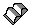

In a previous topic, we discussed how you can use :cgraphic. to illustrate your text with character graphics. With :artwork., you can illustrate your text with bit-map or metafile graphics. A bit map is a representation of an image, and can be created with such tools as the Icon Editor, which is available with the IBM Developer. Metafiles provide device independence; bit maps do not. The bit map or metafile graphics reside in a file that must be specified with the name=' ' attribute of :artwork.. This file is then loaded when you compile your source file with the IPF compiler. The OS/2 2.0 compress bit map format is not supported by the IPF compiler. The IPF compiler compresses the bit maps.
The artwork tag has other attributes as well:
The ratio between the width and height of the window should be the ratio of the original width and height of the bit map or metafile; otherwise, the graphic might appear distorted.
Input Example
:p.This is an example of artwork displayed within the:artwork runin name='BOOK.BMP'. text of a sentence. .** :p.You can also align the artwork to appear on the :lines align=left. left, :elines. :artwork align=left name='BOOK.BMP'. :lines align=right. right, :elines. :artwork align=right name='BOOK.BMP'. :lines align=center. or center of the window. :elines. :artwork align=center name='BOOK.BMP'.
It would bring the artwork into the screen like this.
This is an example of artwork displayed within the text
of a sentence.
text
of a sentence.
You also can align the artwork to appear on the left,
right,
 or
center of the window.
or
center of the window.
Example of the Artwork Tag